From neurulation to cortical regionalization
Scuola di Psicologia, University of Florence
The nervous system emerges through a coordinated sequence of:
Guiding idea
Development does more than enlarge a structure. It progressively creates differences between cells and regions.
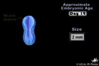
To understand how the nervous system develops (and how brain activity gives rise to behaviour) we need a comparative perspective across species.
What can this comparison tell us?
Why study other animals?
Human embryology
Mainly supports observation and description of developmental timing and anatomy.
Some experiments and developmental perturbations cannot be performed in humans for ethical and practical reasons.
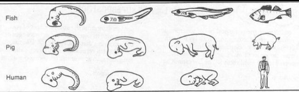
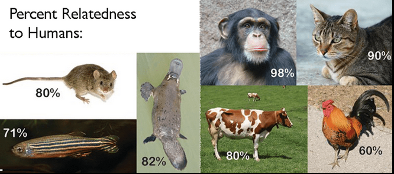
Animal models
Amphibian, chick, and mouse models allow controlled manipulation of:
Controlled perturbations make it possible to test causal hypotheses, rather than only describe development.
Many fundamental mechanisms are highly conserved across vertebrates. Species differences must still be considered when interpreting results.
Everything starts with a single cell: the fertilized egg, or zygote.
After fertilization, the zygote begins to divide repeatedly.
These first divisions produce cells that are different from most cells in the adult body. Stem cells differ in their developmental potential, that is, in how many different cell types they can generate.
Stem cells are not all the same. Their potential changes during development:
totipotent → pluripotent → multipotent → specialized cells
Totipotent cells: can generate all tissuesPluripotent cells: can generate almost every cell type of the bodyMultipotent cells: can generate several related cell types within a tissueOligopotent cells: can generate only a few closely related cell typesUnipotent cells: can generate only one specialized cell typeDifferentiation: the process by which stem cells become specialized into specific cell types.
Three germ layers become distinct during early embryonic development:
Neural tissue develops from a specialized region of the ectoderm.
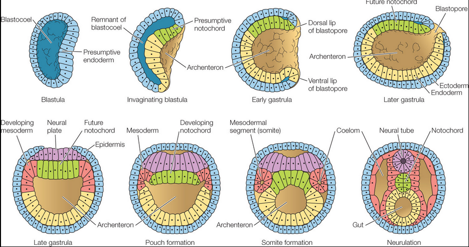
Neurulation transforms a flat region of ectoderm into a tubular structure.
neural plate appearsedges become elevatedbends inwardfuseNeural plate
A thickened region of ectoderm that will form much of the central nervous system.
Neural groove
A midline depression bordered by the neural folds.
Neural tube
The closed structure from which the brain and spinal cord will develop.
The neural crest gives rise to much of the peripheral nervous system, including sensory and autonomic neurons.
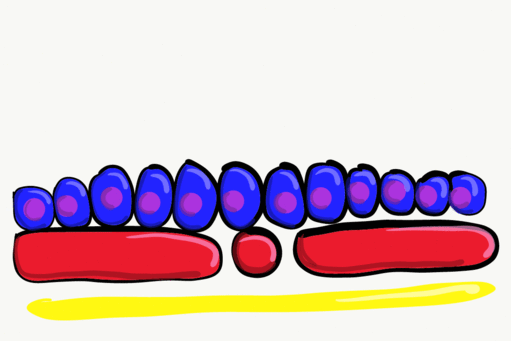
Early neurulation
Neuropore closure
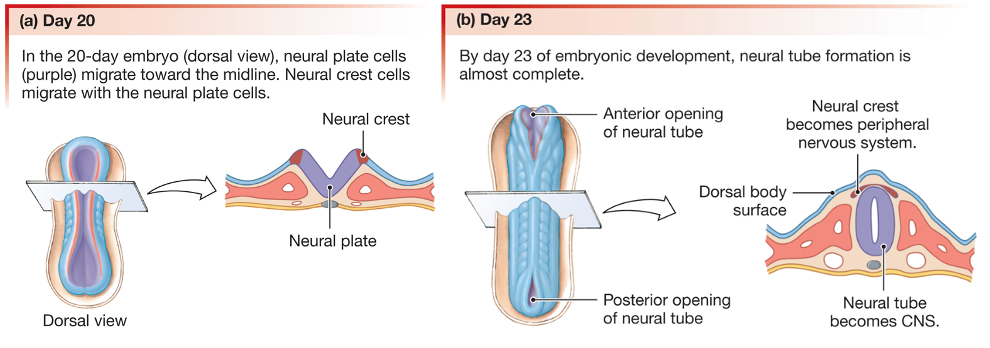
During closure:
Disrupted closure can produce neural tube defects. The outcome depends on the affected region. Example: Spina Bifida
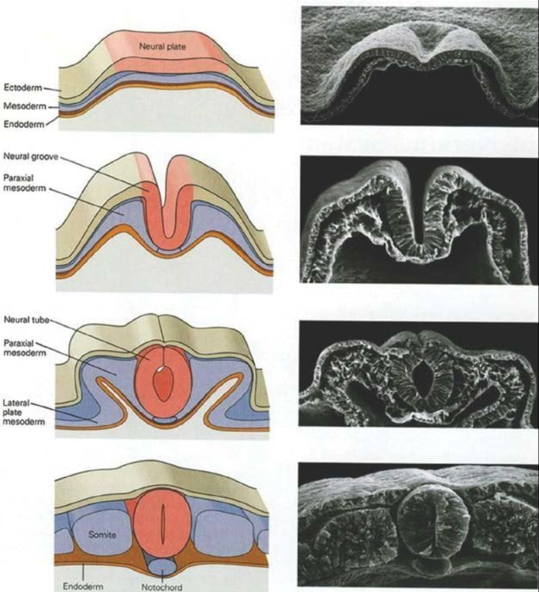
Procedure
The graft induced the formation of a secondary embryonic axis.
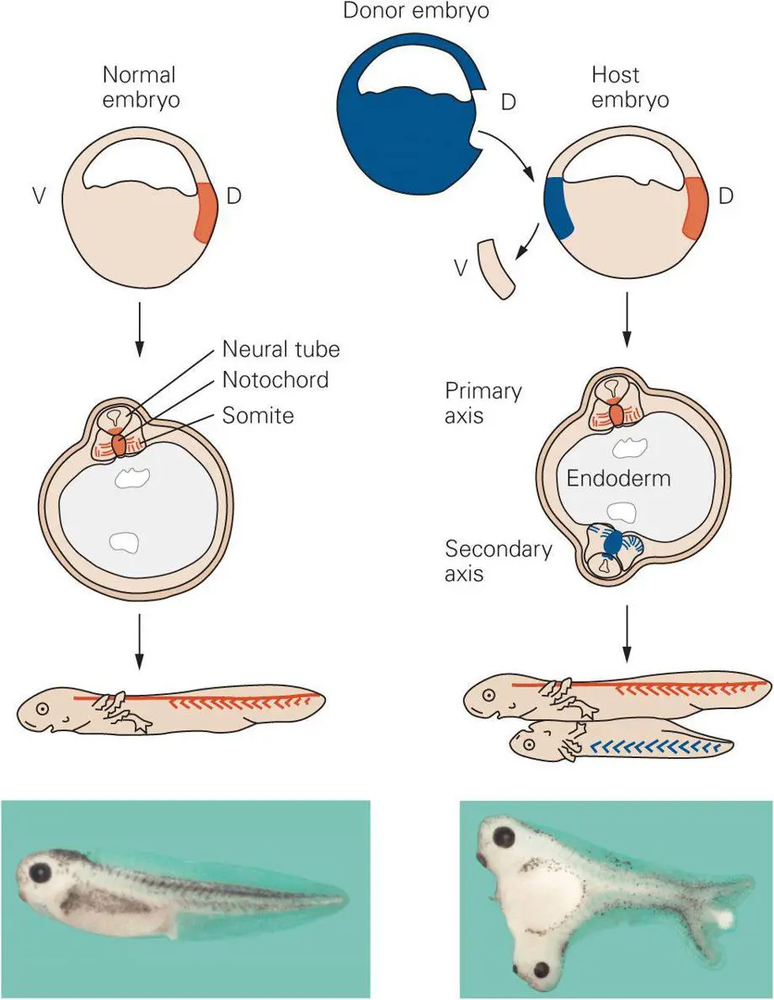
The transplanted tissue is called an organizer because it can:
What does this show?
Development depends on interactions between groups of cells, not only on autonomous instructions within each cell.
An organizer is not a complete blueprint. It creates signals and conditions that coordinate different cellular responses.
Even when the organizer is transplanted between different species, it can induce a secondary axis. For example, a chick organizer node transplanted into a zebrafish embryo recruits surrounding zebrafish cells to form a secondary axis.
The induced structures have the characteristics of the host species, not of the donor.
Organizer → instructive signals
Host cells → build the new tissues
An animal cap is a small ectoderm explant removed from an amphibian blastula.
Researchers can culture it using in vitro Experimental techniques:
The assay provides a simple test of how signals change ectodermal fate.
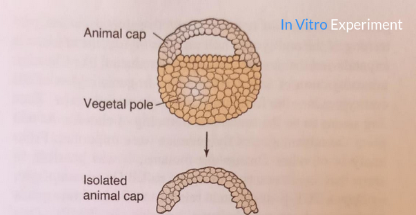
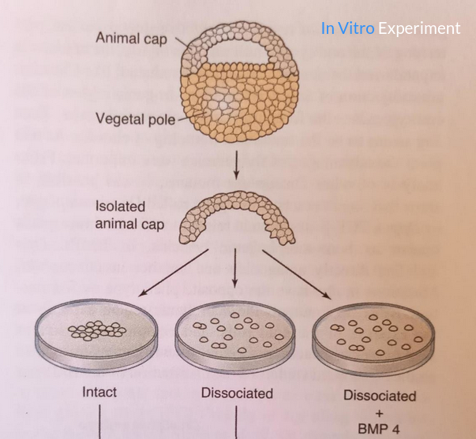
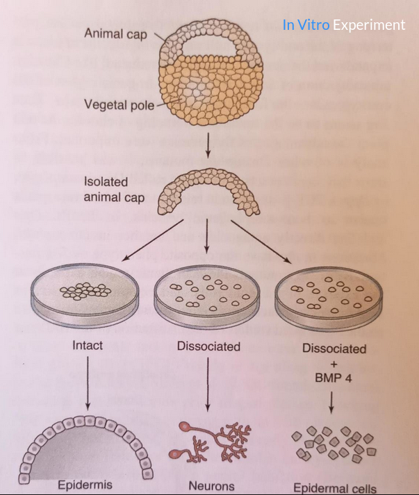
BMP signaling promotes non-neural, epidermal development in the ectoderm.
Reducing BMP signaling allows competent ectoderm to adopt a neural fate.
The organizer releases BMP antagonists, including Noggin, Chordin and Follistatin. These signals support neural induction.
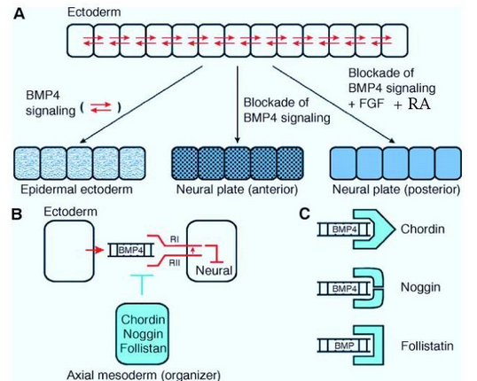
The initially continuous neural tube acquires distinct identities along two axes:
Its regions progressively differ in structure, cell types, and future connections.
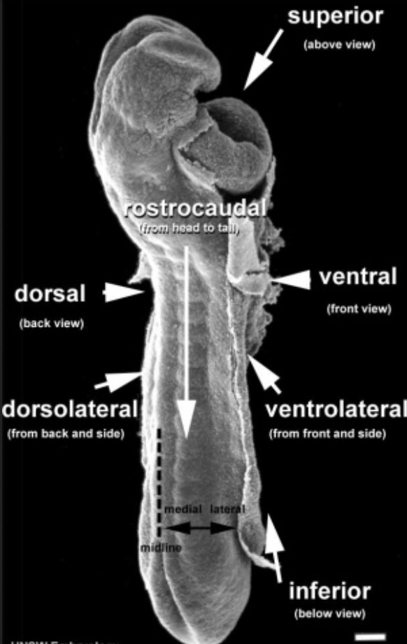
Ventral patterning: The notochord and floor plate provide SHH, a major ventral signal.
Dorsal patterning: The roof plate and nearby ectoderm provide BMP and WNT dorsal signals.
These signals form gradients. Cell identity depends on:
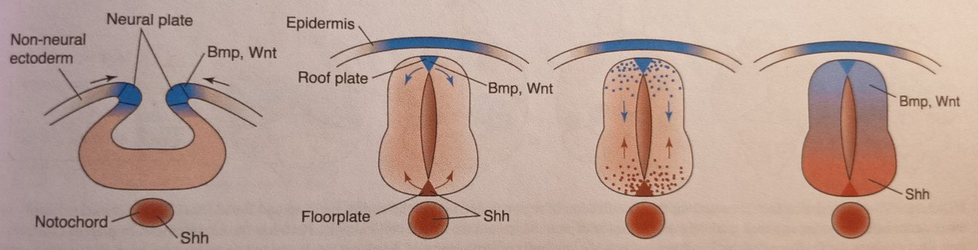
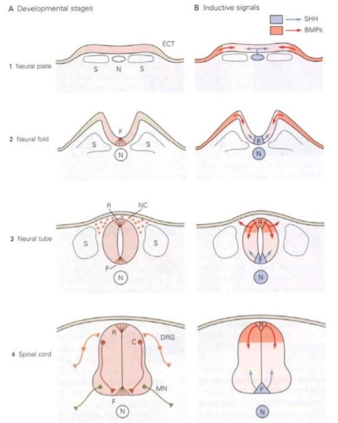
Dorsoventral gradients contribute to the identity of neural progenitor cells.
SHH is highest ventrally, whereas BMP/WNT signals are stronger dorsally.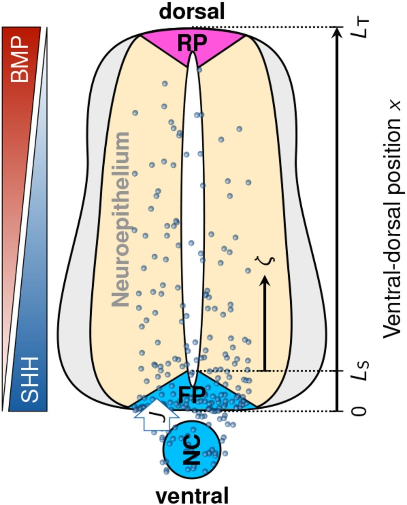
SHH forms a ventral-to-dorsal concentration gradient in the developing neural tube.
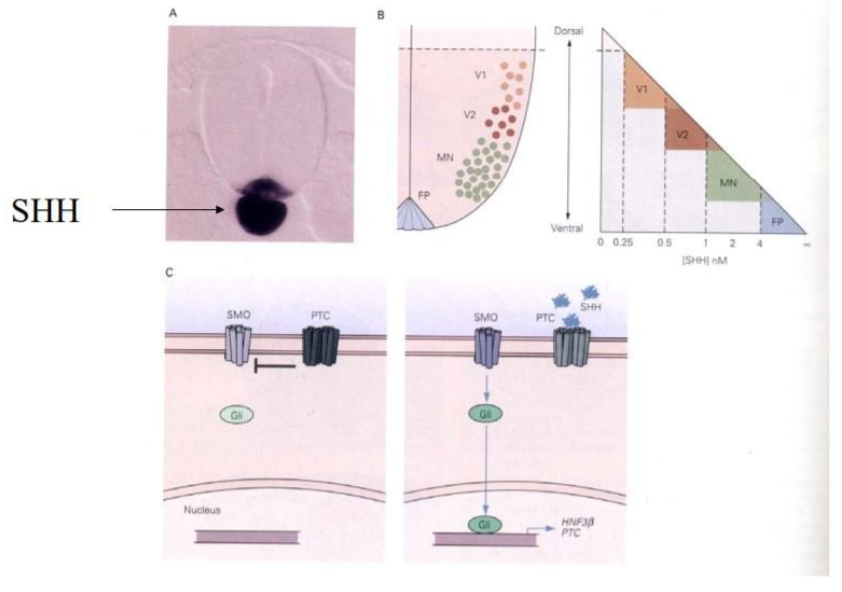
BMPs are produced dorsally and form a gradient opposite to SHH.
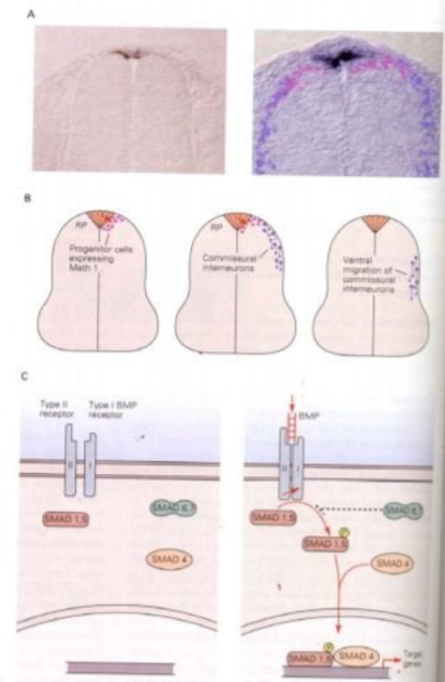
Competence is a cell’s ability to respond to a particular signal.
Different cells can receive the same signal but produce different responses.
The response depends on:
A signal has no fixed meaning outside its cellular and developmental context.
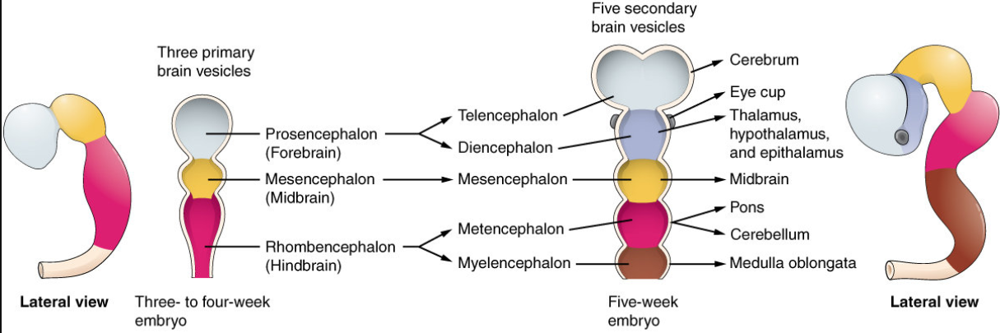
Primary brain vesicles
forebrainmidbrainhindbrainSubdivisions
The forebrain forms the telencephalon and diencephalon.
The midbrain retains its name.
The hindbrain forms the metencephalon and myelencephalon.
Broad identities emerge along the anteroposterior axis:
Regionalization is progressive. Broad early domains are later refined into more specific territories.
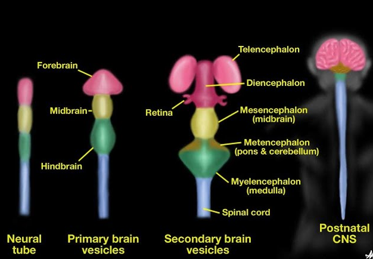
WNT, FGF, and retinoic acid contribute to anteroposterior patterning.
Their level and timing help distinguish anterior from posterior neural identities.
This model works well for the posterior neural tube and spinal cord. Patterning of the anterior nervous system is more complex and cannot be described by a single anteroposterior gradient alone.
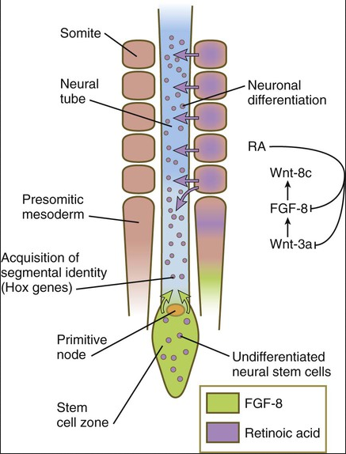
Morphogen gradients provide continuous positional information, but the nervous system must eventually be organized into distinct regions.
One example is the developing hindbrain, which is divided into transient segments called rhombomeres.
Rhombomeres are transient developmental structures.
They do not persist as separate units in the adult brain. During development, their cells are reorganized and contribute to the formation of the mature hindbrain, including structures and nuclei of the pons, medulla, cerebellar-related systems and cranial nerves.
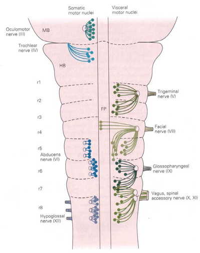
Hox genes translate positional information into regional identity.
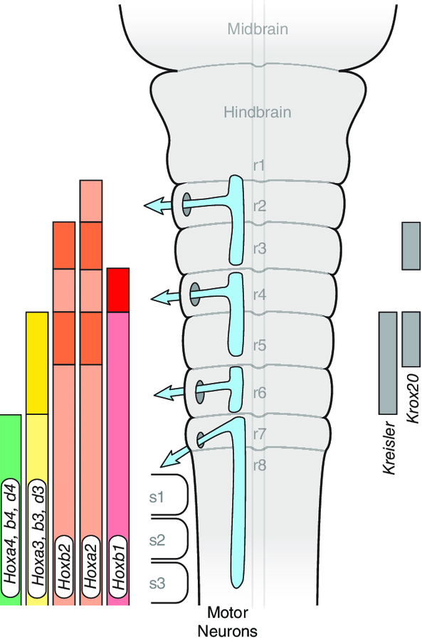
The Hox pattern in the hindbrain is just one example of a more general principle of nervous system development.
Gene expression is not established in isolation: it is continuously influenced by signals present in the extracellular environment.
Morphogens and other extracellular signals interact with receptors on the cell and activate intracellular molecular pathways.
These pathways modify the expression of transcription factors and other genes, initiating different developmental programs.
Through this process, initially similar cells acquire different identities and progressively organize into distinct domains, nuclei, and brain areas.
The anterior nervous system is much more structurally complex than the spinal cord. For this reason, anterior patterning depends on multiple local organizing centers, rather than on a single morphogen gradient.
Example: the isthmic organizer
The isthmus is located at the boundary between the developing midbrain and hindbrain.
It acts as an organizer by releasing signaling molecules, especially WNT1 and FGF8, that pattern the surrounding tissue and promote the development of the mesencephalon and metencephalon.
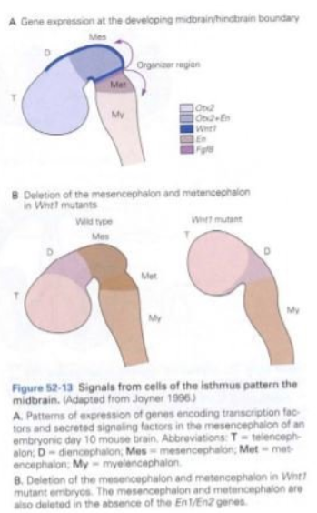
The developing neocortex initially appears relatively homogeneous, but it will become organized into many functionally distinct cortical areas.
Extracellular signals provide positional information. Different signaling centers produce gradients across the developing cortex:
FGFs particularly FGF8, from the anterior regionWNTs and BMPs from dorsocaudal regions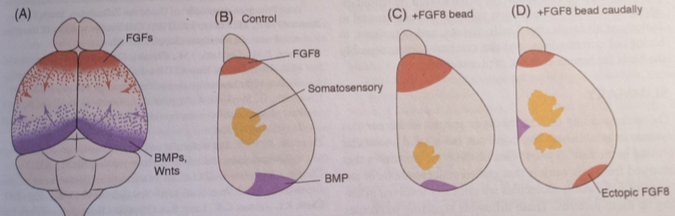
Experimental manipulation of FGF8 changes the position of cortical areas:
This shows that FGF8 is not simply correlated with cortical organization: it can instruct the position of cortical areas.
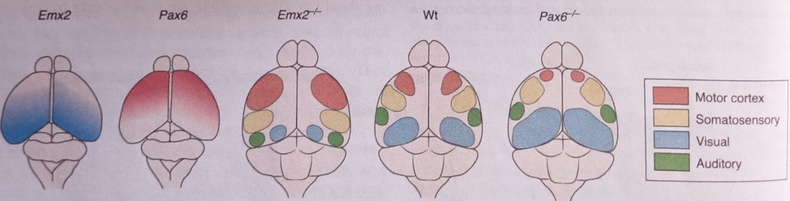
Morphogen gradients are translated into gradients of transcription factor expression.
Two important examples are Emx2 and Pax6, which are expressed in approximately opposing gradients across the developing neocortex.
Emx2 is higher toward caudomedial cortex.Pax6 is higher toward rostrolateral cortex.Classical protomap hypothesis
Early regional differences in cortical progenitors provide an initial map of future cortical areas.
Classical protocortex hypothesis
The early cortex is relatively flexible. Thalamic inputs play a major role in shaping areal identity.
Integrated interpretation
Intrinsic patterning establishes early regional biases. Thalamic inputs and activity refine the developing cortical map.
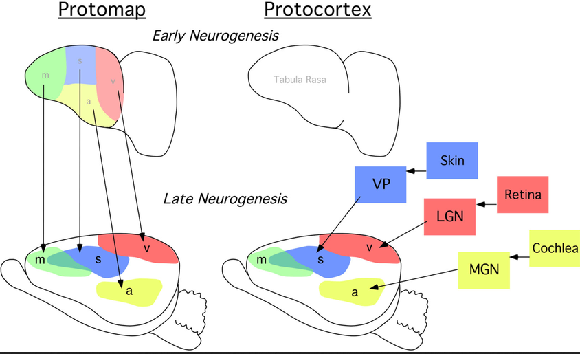